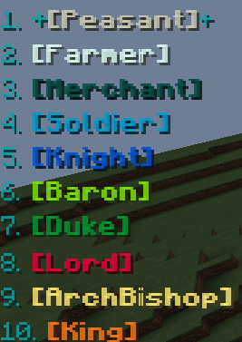
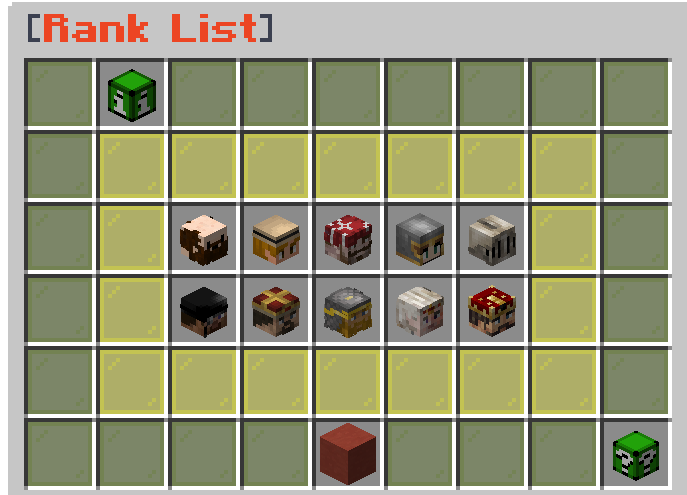

Ranks

All ranks here are attainable in game , all having their own unique rewards that assist you during your playtime.To access these what these rewards are , enter the following command:
/ranks

This menu will show you everything you need to understand ranks on the server, each head encapsulated inside the yellow stained glass represents one of each of the the ten ranks.In top to bottom , left to right order.
Hovering over any of these heads will show you in order:
►Rank Name
►Playtime Requirement - How long you must play for rank to be accessible to rank-up to.
►Skill Requirements - All McMMO Skill levels you must attain before rank-up is accessible.
►Money - The amount of in-game money needed in /bal to rank-up.
►Item Requirements - All items needed in inventory in order to rank-up.
►Rewards - Access to new commands , more claims , perks and a new prefix indicating of rank change.
As mentioned , all the ranks can be accessed via this menu , if you further hover other the "Player Information" icon , this will briefly tell you your current rank , rank-up progress and the next rank in line to rank-up to.
Once you can rank-up , simply enter in the following command.
/rankup